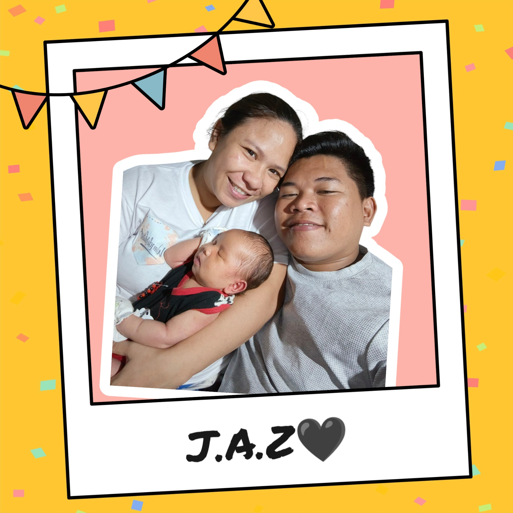
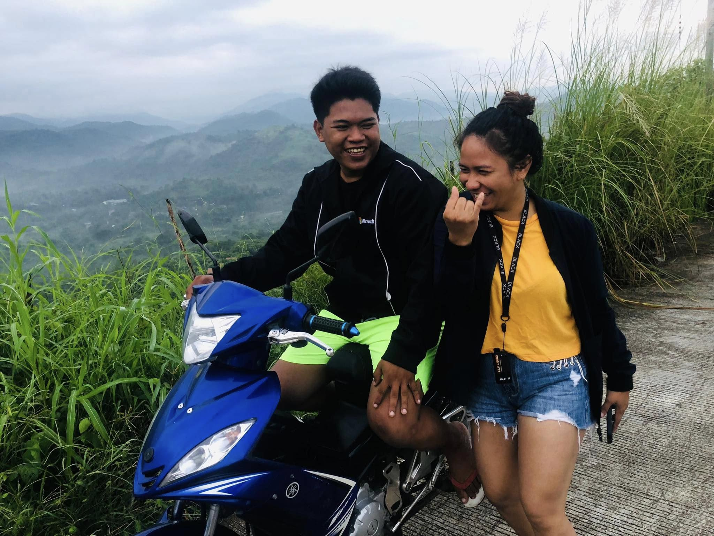

Happy Anniversary, Adie!❤️
Isang taon na ang lumipas, at mas lalo lang lumalim ang pagmamahal ko sayo. Maraming salamat sa lahat ng tawanan, suporta, at pagmamahal. Ikaw ang pinakamagandang nangyari sa buhay ko.
Sa hindi inaasahan, binigyan kagad tayo ni Lord ng isang magandang regalo na mas nagpatibay ng pagmamahalan natin.
Sa loob ng isang buong taon parang sobrang daming nangyari mga hindi talaga inaasahan nanjan nga yung may malungkot na parte at hindi maiiwasan sa tampuhan at away pero ang palaging nakakapag pasaya ng araw ay yung palaging masaya sa bawat araw palaging positibo sa mga nangyayari
Salamat sa lahat ng pagmamahal mo pagtitiis mo, pag aalaga mo sa anak natin sa pag intindi mo sa kabulolan ko at sa lahat ng mga pang aasar at kabusitan ko sana adie habang buhay lagi tayo maging magkasama sa hirap man o ginhawa lagi natin palakasin ang isat isa at palaging isipin ang pang habang buhay na kaligayahan
Sana'y marami pa tayong anibersaryo na ipagdiwang nang magkasama. Mahal na mahal kita!
click the envelope if you want to marry me
Mi Familia
JAZ
Drt
Balaong
SM North Edsa
ZK's Coming
Drt Part 2
Minalunago
Night Market
Cafe Piat